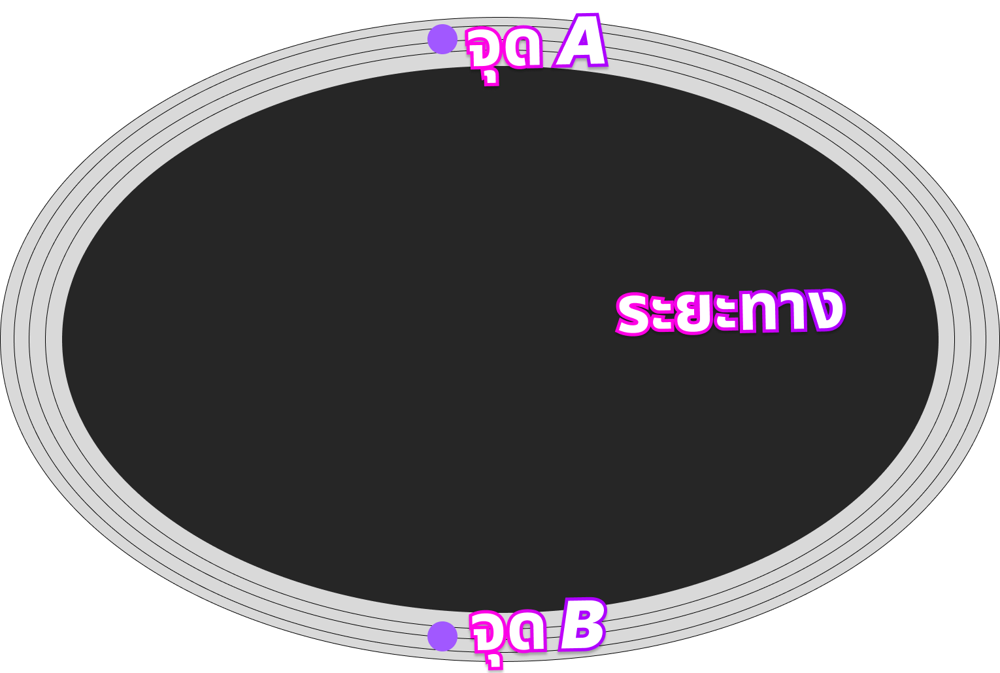
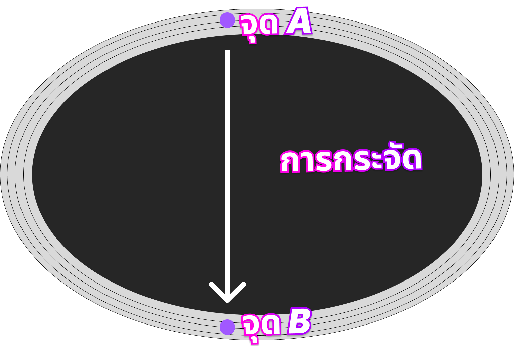

ยินดีต้อนรับเข้าสู่บทเรียนการเคลื่อนที่แนวตรง
ในบทเรียนนี้จะเริ่มจาก ความเร็ว ระยะทาง และเวลานะครับ โดยจะมีตัวอย่างการเคลื่อนที่ และโจทย์สนุกๆให้ลองเล่น ไปเรียนกันได้เลย

สิ่งที่ควรรู้
การกระจัด ( Displacement): มันเป็นปริมาณเวกเตอร์ ดังที่กล่าวไปแล้วว่า ถ้าเป็นเวกเตอร์เราต้องสนใจ 2 อย่างคือ ขนาดและทิศทาง
ขนาด ก็คือระยะห่างของ จุดเริ่มต้น กับ จุดสุดท้าย ดูว่าสองจุดนี้มันห่างกันเท่าไหร่
เราไม่ต้องไปสนใจเลยว่าเส้นทางการเคลื่อนที่มันเป็นอย่างไร
ดูแค่ว่าเส้นตรงที่ลัดจากจุดแรก
ไปจุดสุดท้ายมันยาวเท่าไหร่ก็พอ
ทิศ จะมีทิศชี้จากจุดเริ่มต้นหันหัวไปจุดสุดท้าย
ระยะทาง (Distance): ร เป็นปริมาณสเกลาร์
ค่าของปริมาณนีก็คือ ความยาวของเส้นทางการเคลื่อนที่จริงๆ
หน่วยในระบบ SI คือเมตร (M)
เช่นเดียวกับการกระจัด
ความเร็ว (Velocity): ความเร็วนิยามมาจาก การเอาการกระจัดมาหารด้วยเวลาของการเคลื่อนที่นั้น ความเร็วจึงเป็นประมาณเวกเตอร์ไปด้วย
ขนาด มันก็คือขนาดของการกระจัดหารด้วยเวลา
ทิศ มีทิศเดียวกับการกระจัด
หน่วยของความเร็วก็คือ เมตรต่อวินาที(m/s)
อัตราเร็ว(Speed): อัตราเร็ว นิยามมาจากการเอาระยะทางมาหารด้วยเวลาของการเคลื่อนที่นั้น จึงเป็นปริมาณสเกลาร์เหมือนกับระยะทางไปด้วย
หน่วยของอัตราเร็วก็คือ เมตรต่อวินาที(m/s)
ความเร่ง (Acceleration): ความเร่ง นิยามมาจาก การเอาความเร็วที่เปลี่ยนไปหารด้วยเวลา ความเร่งเป็นปริมาณเวกเตอร์
หน่วย คือ เมตรต่อวินาทีกำลังสอง จะอธิบายลึกๆในบทถัดไปนะครับ
อัตราเร่ง (Acceleration): อัตราเร่ง นิยามมาจากจากเอาอัตราเร็วที่เปลี่ยนไปมาหารด้วยเวลาในช่วงนั้น อัตราเร่งเป็นปริมาณสเกลาร์
หน่วยก็คือ เมตรต่อวินาทีกำลังสอง
ระยะทางและการกระจัด

ระยะทาง สรุปง่ายๆก็คือ เป็นสิ่งที่ใช้ในการเคลื่อนที่จากจุดเริ่มต้นไปจนถึงจุดสิ้นสุด เช่น รถคนนึงเคลื่อนที่จากจุด A ไปยังจุด B โดยไม่ใช้ทางลัด ดังรูป

แต่เมื่อเป็นการกระจัด จะเป็นการเดินทางโดยใช้ทางลัด หรือก็คือเดินทางจากจุดแรกไปจุดสุดท้ายโดยใช้ระยะที่น้อยที่สุด ดังรูป
ความเร่งและอัตราเร่ง
ความเร่ง มีอยู่ 3ประเภทให้ศึกษาก็คือ ความเร่งที่เป็น0 ความเร่งที่เป็นบวก และความเร่งที่ติดลบ
ซึ่งความหมายที่ทำให้เข้าใจง่ายที่สุดคือการเปลี่ยนแปลงความเร็วในหนึ่งหน่วยเวลา ดูตามรูปได้เลยครับ
สมมุติว่าเด็กสาวคนนี้กำลัง วิ่ง ด้วย ความเร็ว 2m/s
เพื่อนๆจะเห็นได้ว่าเด็กสาวคนนี้กำลังวิ่งแบบไปเรื่อยๆไม่เร็วขึ้นไม่ช้าลง แบบนี้เรียกว่า v คงที่ หรือความเร็วคงที่
ซึ่งการเคลื่อนที่แบบนี้ a หรือ ความเร่งนั้นจะต้องเป็น 0 นั่นเอง
- t = 1
- t = 2s
- t = 3s
- t = 4s
- t = 5s
- t = 6s

สมมุติว่า พ่อหนุ่มสเก็ตบอร์ดคนนี้กำลัง เล่นสเก็ต ด้วย ความเร็วต้น 2m/s
เพื่อนๆจะเห็นได้ว่าพ่อหนุ่มคนนี้ค่อยๆเร็วขึ้นเรื่อยๆ จากความเร็ว 2m/s ผ่านไป 4วินาที ทำไมความเร็วเพิ่มขึ้น?
ซึ่งเหตุผลก็คือการเคลื่อนที่นี้มีความเร่ง ก็คือ a > 0 หรือความเร่งมากกว่า 0 จึงทำให้มีความเร็วเพิ่มขึ้นนั่นเอง
- t = 1
- t = 2s
- t = 3s
- t = 4s
- t = 5s
- t = 6s

สมมุติว่าพ่อหนุ่มคนนี้เคลื่อนที่ด้วยความเร็วคงที่ 2m/s
แต่เพื่อนๆจะเห็นได้ว่าพ่อหนุ่มคนนี้เคลื่อนที่ด้วยความเร็วคงที่ (a=0 , v คงที่) แต่ในช่วงหนึ่งความเร็วของเขาก็ลดลง
ซึ่งเป็นเพราะว่ามีความเร่งมาเกี่ยวข้อง แต่เป็นความเร่งที่ติดลบหรือ a < 0 จึงทำให้ความเร็วลดลงนั่นเอง
หรืออาจจะทำให้การเคลื่อนที่นั้นถอยหลังก็ได้
- t = 1
- t = 2s
- t = 3s
- t = 4s
- t = 5s
- t = 6s